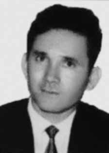

José
Raimundo
da Costa
CIRCUNSTÂNCIAS DA MORTE
Depoimentos de militantes políticos afirmaram que José Raimundo da Costa foi preso em São Paulo (SP) e conduzido ao Rio de Janeiro (RJ). Entretanto, na falsa versão divulgada à época, José Raimundo teria morrido após reagir a elementos do Serviço de Segurança do Exército, no dia 5/8/1971, no Rio de Janeiro (RJ). Em um documento do DOPS, produzido no dia 05/08/1971, o comissário Jayme Nascimento, do DOPS/RJii, descreveu a falsa versão de tiroteio para a morte de José Raimundo da Costa, registrada como “Encontro de Cadáver de elemento subversivo. Morte por reação à prisão”, e informou que em uma travessa próxima à Rua Otacílio Nunes, em Pilares (RJ), [….] havia sido morto um elemento subversivo de nome José Raimundo da Costa, vulgo Moisés, quando reagiu à prisão numa diligencia efetuada por elementos pertencentes ao Serviço de Segurança do Ministério do Exército. Essa versão, no entanto, revelou-se falsa, após ser confrontada com documentos oficiais, a exemplo do registro de entrada do IML de José Raimundo e da perícia de local do ICE/RJ, além do depoimento de Inês Etienne Romeu, ex-presa política, sobre sua prisão na “Casa da Morte de Petrópolis”. A Certidão de Óbito registra a falsa versão de morte em tiroteioiii . Nesse sentido, há uma ficha dactiloscópicaiv , de 5 de agosto de 1971, que registra a entrada corpo de José Raimundo no IML/RJ com o nome de Odwaldo Clóvis da Silva. A despeito de já ter sido identificado e conhecerem o seu nome verdadeiro, a necropsia também foi lavrada com essa falsa identidade pelos legistas Hygino de Carvalho Hercules e Ivan Nogueira Bastos, que deram aval à falsa versão dos fatosv . No quesito do documento, em que consta pergunta se a morte teria ocorrido por meio de veneno, fogo, explosivo, asfixia ou tortura, ou por outro meio insidioso ou cruel, os legistas responderam que o item estava “prejudicado”. Os peritos que examinaram o local de morte registraram que os pulsos da vitima apresentavam hematomas. As marcas das algemas que prenderam seus pulsos são evidentes mesmo ao examinar-se a foto. Em 9 de setembro de 1971, José Raimundo foi enterrado como indigente no Cemitério de Ricardo de Albuquerque, no Rio de Janeiro, em seguida, seus restos mortais foram transferidos para um ossuário geral e, posteriormente, para uma vala clandestina, que seria descoberta nesse cemitério em 1990. Inês Etienne Romeuvi afirmou ter ouvido o torturador Laurindo informar aos torturadores Dr. Bruno e Dr. César, que José Raimundo havia sido preso. Dr. Pepe, outro torturador da “Casa da Morte” de Petrópolis disse a Etienne que José Raimundo havia morrido vinte quatro horas após a prisão. José Raimundo foi uma das vítimas do policial infiltrado José Anselmo dos Santos, o “Cabo Anselmo”, que narrou em documentos localizados no DOPS/SP o contato com o dirigente da VPR. Anselmo tinha interesse na eliminação de José Raimundo para, na sequência, assumir posição de dirigente na VPR, e assim controlar os demais militantes. O denominado “Relatório de Paquera”, elaborado por Anselmo, descreveu o contato prévio que teve com vítimas que seriam, posteriormente, executadasvii . O contato de “Cabo Anselmo” com José Raimundo foi uma das ações do agente infiltrado relacionadas à eliminação de membros da VPR, que culminariam na “Chacina da Chácara São Bento”, em Pernambuco, em 1973. O parecer da relatora do caso na CEMDPviii, Suzana Keniger Lisboa, considerou como prova da falsificação da versão de morte o depoimento da ex-presa política Inês Etienne Romeu, as marcas de algemas nos pulsos, o laudo com nome falso seguido do sepultamento como indigente e o contato e a delação do ex-cabo Anselmo. A falsa versão de tiroteio, portanto, teve o objetivo de omitir a morte sob torturas de José Raimundo.
Statements from political activists stated that José Raimundo da Costa was arrested in São Paulo (SP) and taken to Rio de Janeiro (RJ). However, in the false version published at the time, José Raimundo would have died after reacting to elements of the Army Security Service, on 8/5/1971, in Rio de Janeiro (RJ). In a DOPS document, produced on 08/05/1971, Commissioner Jayme Nascimento, from DOPS/RJii, described the false version of a shooting for the death of José Raimundo da Costa, recorded as "Corpse Encounter of a subversive element. Death as a reaction to arrest", and reported that in an alley near Rua Otacílio Nunes, in Pilares (RJ), [….] a subversive element named José had been killed Raimundo da Costa, alias Moisés, when he reacted to the arrest in an investigation carried out by elements belonging to the Security Service of the Ministry of the Army. This version, however, turned out to be false, after being compared with official documents, such as José Raimundo's IML entry record and the ICE/RJ location inspection, in addition to the testimony of Inês Etienne Romeu, a former political prisoner, about her imprisonment in the “House of Death in Petrópolis”. The Death Certificate records the false version of death in a shootingiii . In this sense, there is a fingerprint record dated August 5, 1971, which records the entry of José Raimundo into the IML/RJ under the name of Odwaldo Clóvis da Silva. Despite having already been identified and knowing his real name, the autopsy was also carried out using this false identity by coroners Hygino de Carvalho Hercules and Ivan Nogueira Bastos, who endorsed the false version of the facts. Regarding the document, which asks whether the death had occurred by means of poison, fire, explosives, asphyxiation or torture, or by other insidious or cruel means, the coroners responded that the item was “damaged”. Experts who examined the scene of death recorded that the victim's wrists had bruises. The marks from the handcuffs that restrained her wrists are evident even when examining the photo. On September 9, 1971, José Raimundo was buried as a pauper in the Ricardo de Albuquerque Cemetery, in Rio de Janeiro, then his remains were transferred to a general ossuary and, later, to a clandestine grave, which would be discovered in that cemetery in 1990. Inês Etienne Romeuvi stated that she heard torturer Laurindo inform torturers Dr. Bruno and Dr. César that José Raimundo had been arrested. Dr. Pepe, another torturer at the “House of Death” in Petrópolis, told Etienne that José Raimundo had died twenty-four hours after his arrest. José Raimundo was one of the victims of the undercover police officer José Anselmo dos Santos, “Corporal Anselmo”, who narrated in documents located at DOPS/SP the contact with the VPR leader. Anselmo was interested in eliminating José Raimundo so that he could then take on a leadership position in the VPR, and thus control the other militants. The so-called “Flirting Report”, prepared by Anselmo, described the previous contact he had with victims who would later be executed. “Cabo Anselmo”’s contact with José Raimundo was one of the undercover agent’s actions related to the elimination of members of the VPR, which would culminate in the “Chacina da Chácara São Bento”, in Pernambuco, in 1973. The opinion of the rapporteur of the case at CEMDPviii, Suzana Keniger Lisboa, considered as proof of falsification of the version of death the testimony of former political prisoner Inês Etienne Romeu, the handcuff marks on the wrists, the report with a false name followed by the burial as a pauper and the contact and denunciation of the former corporal Anselmo. The false version of the shooting, therefore, aimed to omit the death under torture of José Raimundo.
Declaraciones de activistas políticos indicaron que José Raimundo da Costa fue detenido en São Paulo (SP) y trasladado a Río de Janeiro (RJ). Sin embargo, en la versión falsa publicada en ese momento, José Raimundo habría muerto tras reaccionar ante elementos del Servicio de Seguridad del Ejército, el 5/8/1971, en Río de Janeiro (RJ). En un documento del DOPS, elaborado el 05/08/1971, el comisario Jayme Nascimento, del DOPS/RJii, describió la versión falsa de un tiroteo por la muerte de José Raimundo da Costa, registrado como "Encuentro con el cadáver de un elemento subversivo. Muerte como reacción a la detención", e informó que en un callejón cerca de la Rua Otacílio Nunes, en Pilares (RJ), [….] había sido asesinado un elemento subversivo llamado José Raimundo da Costa, alias Moisés, al reaccionar ante la detención en una investigación realizada por elementos del Servicio de Seguridad del Ministerio del Ejército. Esta versión, sin embargo, resultó ser falsa, luego de ser cotejada con documentos oficiales, como el registro de entrada IML de José Raimundo y la inspección de ubicación del ICE/RJ, además del testimonio de Inês Etienne Romeu, ex prisionera política, sobre su encarcelamiento en la “Casa de la Muerte en Petrópolis”. El Certificado de Defunción registra la versión falsa de la muerte en un tiroteoiii. En este sentido, existe un registro dactiloscópico fechado el 5 de agosto de 1971, que registra el ingreso de José Raimundo al IML/RJ con el nombre de Odwaldo Clóvis da Silva. A pesar de haber sido ya identificado y conocer su verdadero nombre, la autopsia también fue realizada con esta falsa identidad por los médicos forenses Hygino de Carvalho Hércules e Ivan Nogueira Bastos, quienes avalaron la versión falsa de los hechos. Respecto al documento, que pregunta si la muerte se había producido mediante veneno, fuego, explosivos, asfixia o tortura, o por otros medios insidiosos o crueles, los forenses respondieron que el objeto estaba “dañado”. Los peritos que examinaron el lugar de la muerte registraron que las muñecas de la víctima tenían hematomas. Las marcas de las esposas que sujetaban sus muñecas son evidentes incluso al examinar la foto. El 9 de septiembre de 1971, José Raimundo fue enterrado como indigente en el Cementerio Ricardo de Albuquerque, en Río de Janeiro, luego sus restos fueron trasladados a un osario general y, posteriormente, a una fosa clandestina, que sería descubierta en ese cementerio en 1990. Inês Etienne Romeuvi afirmó haber escuchado al torturador Laurindo informar a los torturadores Dr. Bruno y Dr. César que José Raimundo había sido detenido. El Dr. Pepe, otro torturador de la “Casa de la Muerte” de Petrópolis, le dijo a Etienne que José Raimundo había muerto veinticuatro horas después de su arresto. José Raimundo fue una de las víctimas del policía encubierto José Anselmo dos Santos, “Cabo Anselmo”, quien narró en documentos ubicados en el DOPS/SP el contacto con el líder del VPR. Anselmo estaba interesado en eliminar a José Raimundo para luego asumir una posición de liderazgo en el VPR, y así controlar a los demás militantes. El llamado “Informe de Coqueteo”, elaborado por Anselmo, describía el contacto previo que tuvo con víctimas que luego serían ejecutadas. El contacto de “Cabo Anselmo” con José Raimundo fue una de las acciones del agente encubierto relacionadas con la eliminación de miembros del VPR, que culminaría en la “Chacina da Chácara São Bento”, en Pernambuco, en 1973. El dictamen de la relatora del caso en el CEMDPviii, Suzana Keniger Lisboa, consideró como prueba de falsificación de la versión de muerte el testimonio de la ex presa política Inês Etienne Romeu, las marcas de esposas en las muñecas, el informe con nombre falso seguido del entierro como indigente y el contacto y denuncia del ex cabo Anselmo. La versión falsa del tiroteo, por tanto, pretendía omitir la muerte bajo tortura de José Raimundo.